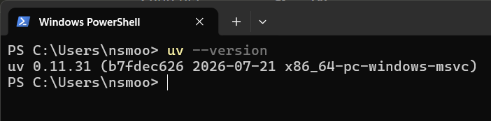
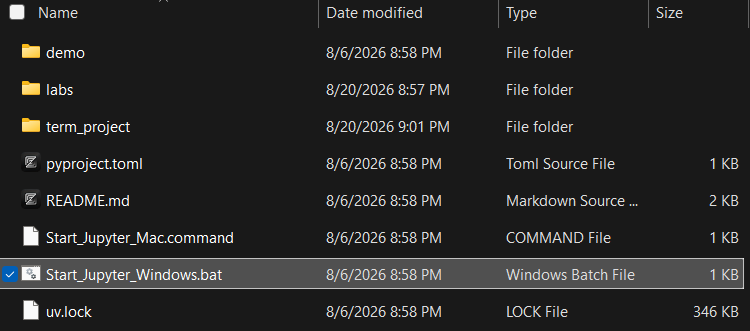

If you already have uv installed, you do not need to reinstall it. You may still run the verification commands below. If a command reports that uv is not found, install uv first and then open a new terminal before continuing.
This video demonstrates first-time setup: installing or verifying uv, installing the course Python version, synchronizing the course project environment, launching JupyterLab, and confirming the setup in the getting-started notebook.
First, go to the uv installation page at https://astral.sh/uv/install. Close to the top of the page, you will see the installation command for your operating system. The command for Windows is shown below. For the macOS and Linux command, click the appropriate header right above the command.
If the command prints a version number, uv is installed. If it says that uv is not recognized or not found, restart the terminal once more. If it still fails, ask for help and include the exact error message.

Figure1.2.2.Successful uv installation version command. Your actual version number may be different.
Remember that zip file containing the course environment folder from the introduction? Extract it to your desired location. This directory will be the place where you put the programming files for the course. Remember this location for the next step. Remember this location for the next step.
Step 4: Start the Jupyter Lab Server and Environment.
If you are running Windows, double-click the Start_Jupyter_Windows.bat file to start the Jupyter Lab server and environment. If you are running macOS or Linux, use the Start_Jupyter_Mac.command script instead. This should install all the required packages for the course and open the Jupyter Lab interface in your web browser.

A screenshot of the course environment folder with the Start_Jupyter_Windows.bat or Start_Jupyter_Mac.command script.
Figure1.2.3.The course environment folder with the Start_Jupyter_Windows.bat or Start_Jupyter_Mac.command script.
Do not delete random files or reinstall many tools at once. First copy the exact error message, check the troubleshooting appendix, and ask for help in the course help channel or office hours. Setup troubleshooting is something that AI can help with and you have permission to use it for troubleshooting the installation process.
When asking for help, either from an AI assistant or from me, include the command you ran, the folder where you ran it, your operating system, and the exact error text. A screenshot can be useful, but copied text is usually easier to search and diagnose.
![Runestone Academy logo]()
![MathJax logo]()